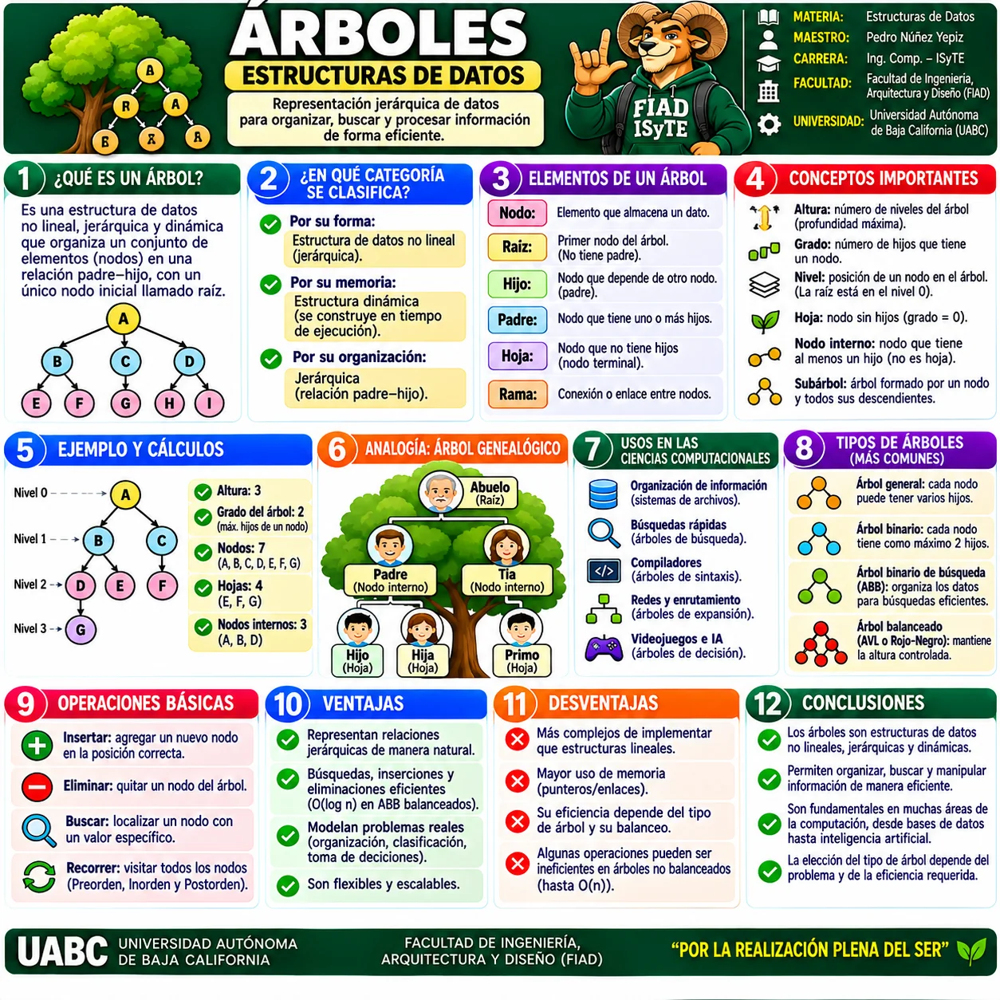
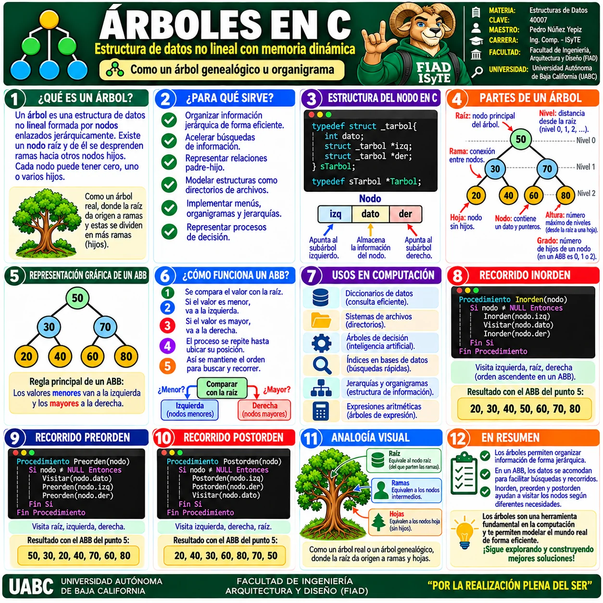
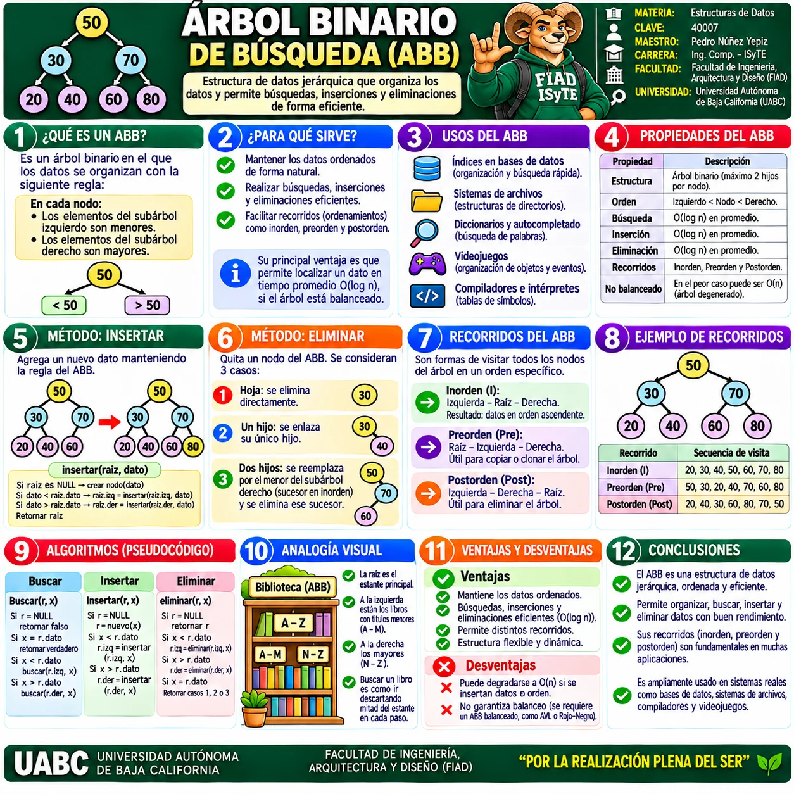
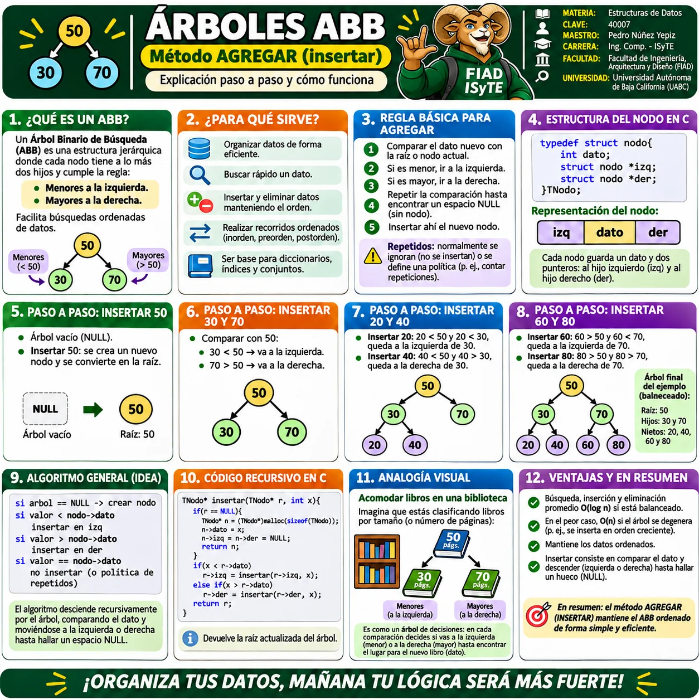
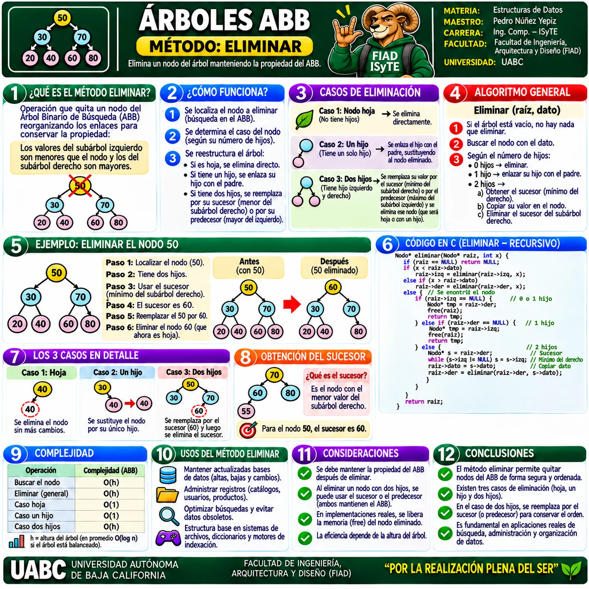
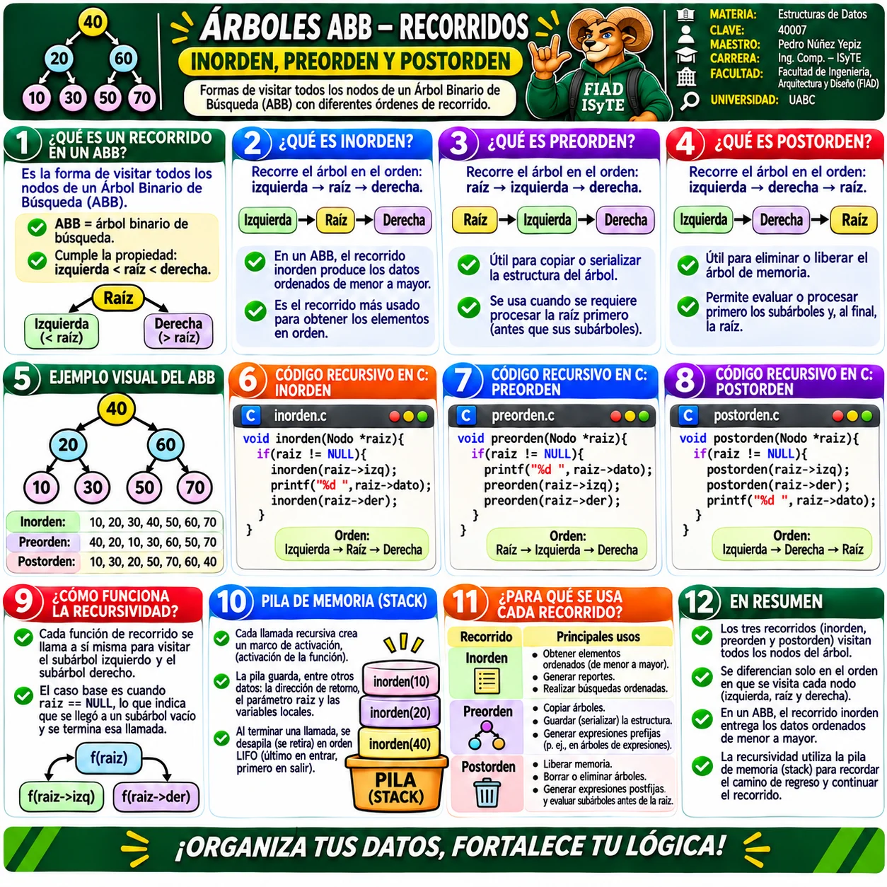
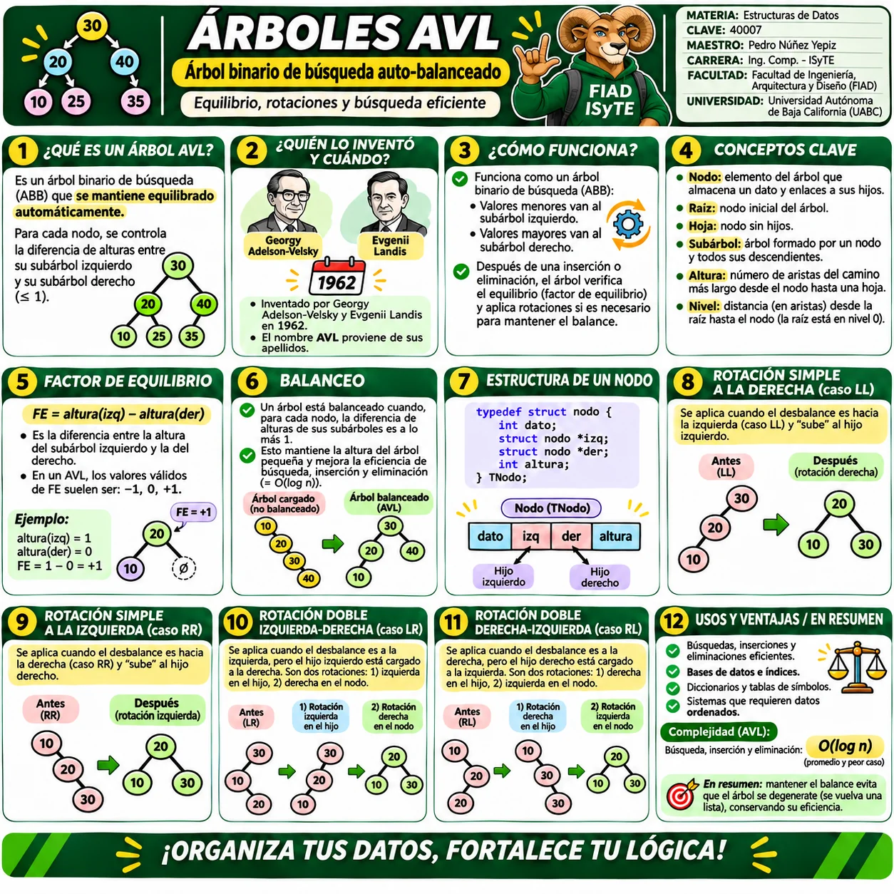
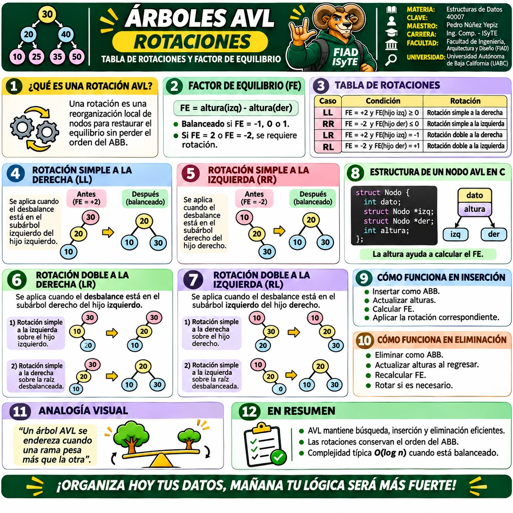

🌳 Galería visual de Árboles
Selecciona una infografía para verla a pantalla completa. Puedes usar Zoom +/−, anterior/siguiente y Esc para cerrar.

1 · Árboles · Estructuras de datos
Conceptos generales, clasificación, elementos, operaciones, ventajas y aplicaciones.

2 · Árboles en C
Estructura del nodo, partes del árbol, recorridos y representación de un ABB en C.

3 · Árbol Binario de Búsqueda (ABB)
Propiedad de orden, operaciones, recorridos, pseudocódigo, ventajas y aplicaciones.

4 · ABB · Método AGREGAR
Inserción paso a paso, regla básica, estructura del nodo y código recursivo en C.

5 · ABB · Método ELIMINAR
Eliminación de hojas, nodos con un hijo y nodos con dos hijos mediante sucesor.

6 · ABB · Recorridos
Inorden, preorden y postorden, recursividad, pila de memoria y código en C.

7 · Árboles AVL
Árboles auto-balanceados, factor de equilibrio, rotaciones, nodo AVL y complejidad.

8 · AVL · Rotaciones
Rotaciones simples y dobles, factor de equilibrio e inserción/eliminación balanceada.
Comienza por la infografía general de Árboles, continúa con Árboles en C y ABB, revisa sus operaciones y recorridos, y termina con AVL y sus rotaciones.